01 · Why
Four in ten bookings get no clear decision
Of 558 bookings that reached the 61 pilot CSPs from 24 Sep to 1 Oct 2026, 242 (43%) got no explicit decision within 24 hours. Most of these bookings never got installed.
We read these as two gaps in the flow:
- Before accepting there is a deadline, but the CSP can't see it. The booking is taken back if it isn't accepted in time. Today the countdown shows only on the home card, so a CSP who opens the booking does not see the clock.
- Accepting and assigning are two separate jobs. Today the CSP accepts on the address screen, lands on the date screen, and has to tap "टीम को भेजें" separately. Many stop after the yes.
The goal is more bookings installed: a clear yes (with a team assigned) or a clear no, before the booking times out. The 24 hours is only the window the analysis used.
02 · What changes
Eleven changes, at a glance
Timer on every surface before acceptance new
Timer turns red in the last 30 minutes new
Address screen opens with the timer first new
Address screen has one way forward changed
Acceptance moves to the date screen changed
After accepting: the commitment merges into the team list new
After assigning: success that becomes the drilldown changed
Closing without accepting asks once changed
Timer info and time-up new
Customer reasons need a call first changed
₹750 line with a link to the scheme in every install drilldown new
03 · New flow
Happy journey: bubble to team assigned
Scroll sideways →
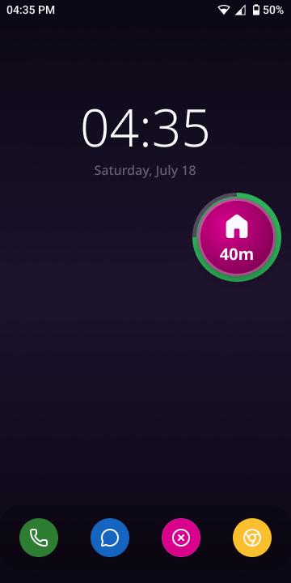
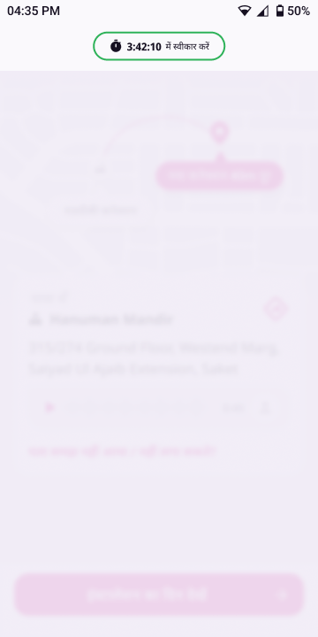
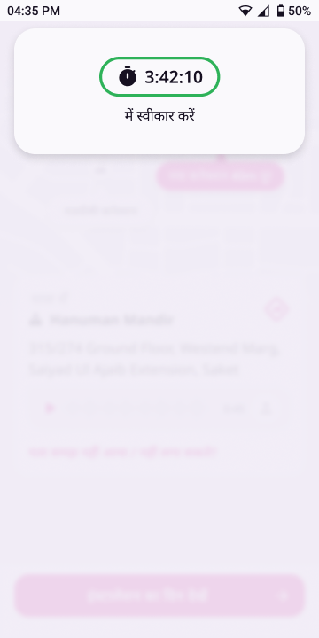
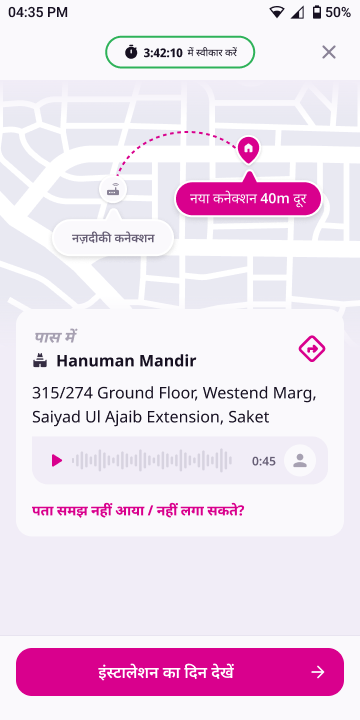
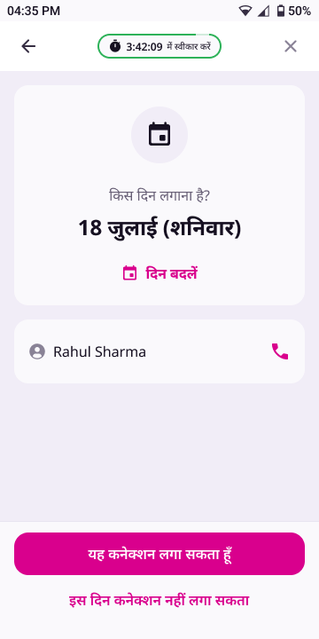
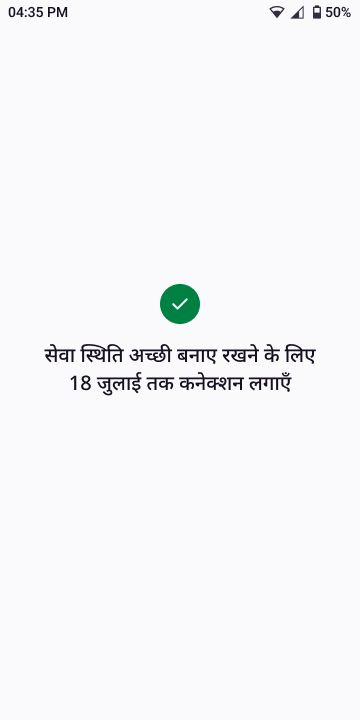
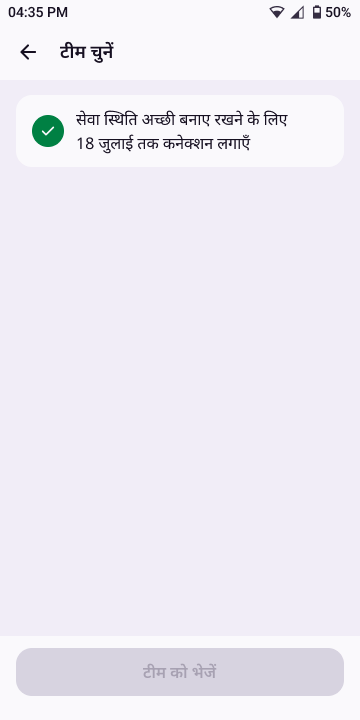
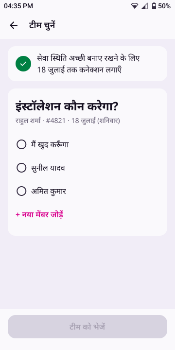
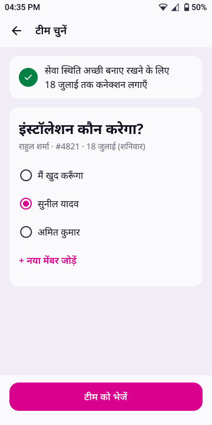
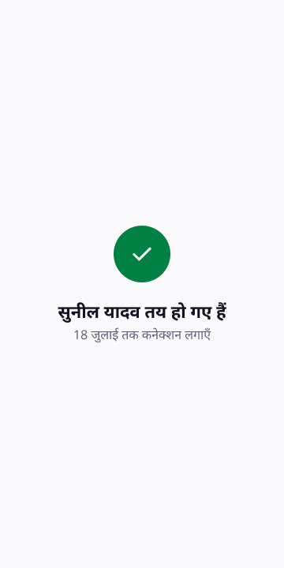
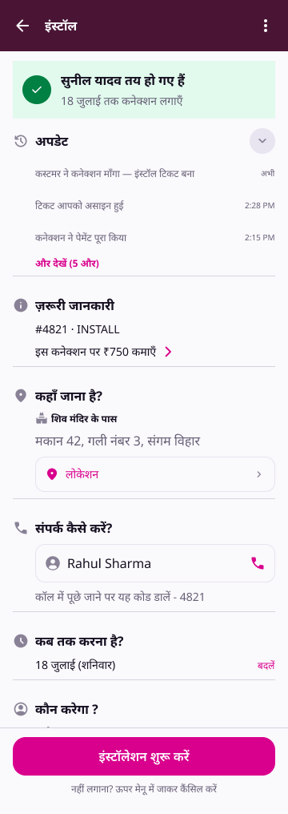
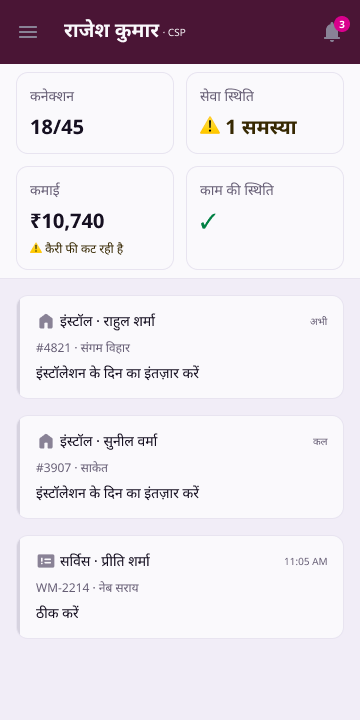
04 · Flow map
Every way out of the two booking screens
05 · Timer rules
One clock, shown in four places
- What it counts: the time left until the booking is taken back if not accepted. The deadline comes from the server; today it is 6 hours from when the booking reaches the CSP. The app only displays the deadline and never sets it.
- Format: h:mm:ss (for example 3:42:10). It ticks every second on the booking screens and the home card.
- The ring is a timer too: the bubble's ring stroke shows the share of time left. It is full when the booking arrives and empties smoothly to nothing at the deadline. When several bookings are stacked, each bubble has its own ring, and the top one is visible in the collapsed stack.
- Where it shows: the bubble ring, the address screen chip, the date screen chip, and the home card's second line ("3:42:10 · कनेक्शन स्वीकार करना बाकी है").
- Last 30 minutes: the time turns red (text/critical) on the home card and both chips, and the bubble ring turns red (stacked bubbles too). Nothing else changes.
- On accept: the timer stops and disappears from every surface. After acceptance no clock is shown (the 72-hour install window is not shown as a timer).
- At zero with a booking screen open: the chip shows 0:00:00 in red and the "समय खत्म" sheet opens. "ठीक है" → home. If no booking screen is open, the bubble disappears, as today. In both cases the home card becomes a greyed, closed card ("कनेक्शन वापस ले लिया गया") and later moves to पुराने काम (archive), as today.
- Chip tap: opens the timer info sheet ("3:42:10 में कनेक्शन स्वीकार करें").
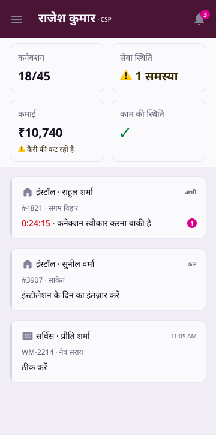
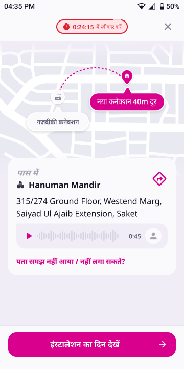
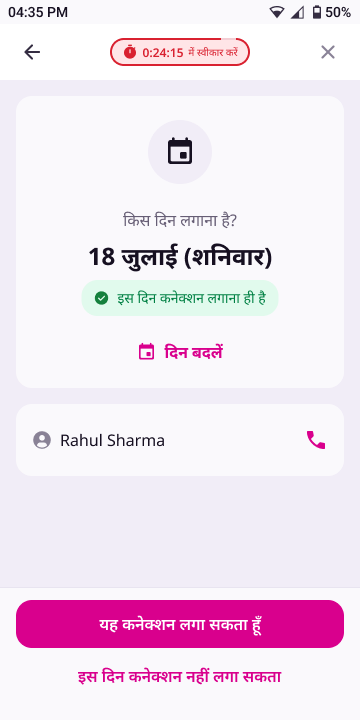
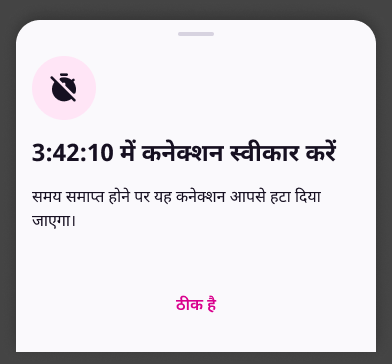
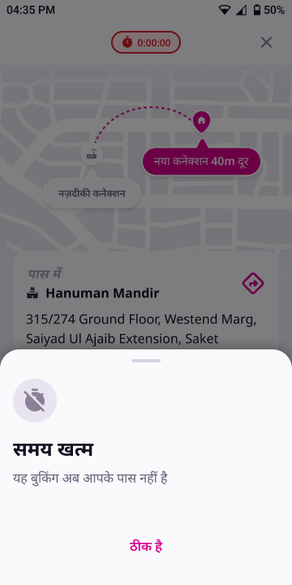
06 · Motion
Three transitions
A · Timer intro (address only)
- Plays only when the address screen opens from the bubble (dissolve, 0.3 s).
- The address screen opens blurred, with the top bar and timer chip at their normal size.
- The top bar grows downward into a card near the top (inset 16 dp), and the chip grows with it (time text 12 → 19 sp), with "में स्वीकार करें" under it. It moves as one block, with a gentle spring, over about 1 s.
- It holds at the large size for 1 s.
- It shrinks back to the normal top bar with the same spring, over about 1 s.
- The blur clears (0.2 s), and the map, address card and CTA are usable.
B · Accepted → team list banner
- Tap "यह कनेक्शन लगा सकता हूँ" → accept call.
- On success, the screen shows a tick and "सेवा स्थिति अच्छी बनाए रखने के लिए 18 जुलाई तक कनेक्शन लगाएँ" (two lines).
- It holds for 1.2 s. There is no loader and no tap.
- The tick and line move up and shrink into a banner card at the top of the team list, over 0.7 s ease-in-out. The header and bottom CTA appear with it.
- After a 0.15 s pause, the team card ("इंस्टॉलेशन कौन करेगा?" + options) fades in, over 0.3 s ease-out.
- The banner stays on the team list, so the date and the quality line are visible while the CSP picks someone.
C · Assigned → drilldown
- Tap "टीम को भेजें" with a member selected.
- A full success screen shows a large tick, "{name} तय हो गए हैं" and "{date} तक कनेक्शन लगाएँ". For self-assign the title is "यह कनेक्शन आप खुद लगाएँगे". It holds for 1.2 s.
- The success block moves up into the drilldown's status banner over 0.7 s ease-in-out, and the rest of the drilldown fades in.
- This applies wherever a technician gets assigned: from the new flow, and from the drilldown's "टीम को भेजें".
07 · Cases
What happens when the CSP leaves the happy path
Case 1 · ✕ on the date screen before accepting
The CSP has seen the address and the date but closes without tapping "यह कनेक्शन लगा सकता हूँ". The booking is still theirs and the timer keeps running.
- ✕ → sheet "कनेक्शन अभी स्वीकार नहीं हुआ है". The secondary button accepts right away.
- बाद में देखूँगा → home. The card shows the timer: "3:42:10 · कनेक्शन स्वीकार करना बाकी है".
- Card tap → opens the date screen again, with the timer running. ← goes to the address screen.
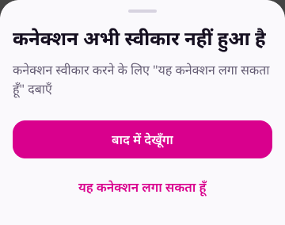
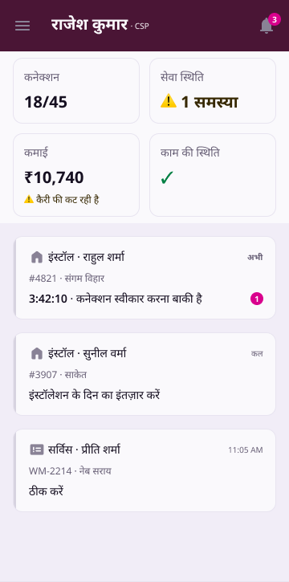
Case 2 · Accepted, closed the team list without assigning
The CSP accepted (the booking is theirs and the timer is gone) but left the team list without picking anyone.
- ← on the team list → home. The card shows "टीम चुनना बाकी है" with an attention mark. There is no timer.
- Card tap → drilldown in the existing awaiting technician state: "टेक्निशियन चुनना बाकी है" with "टीम को भेजें".
- टीम को भेजें → team list → assign → success → drilldown (motion C).
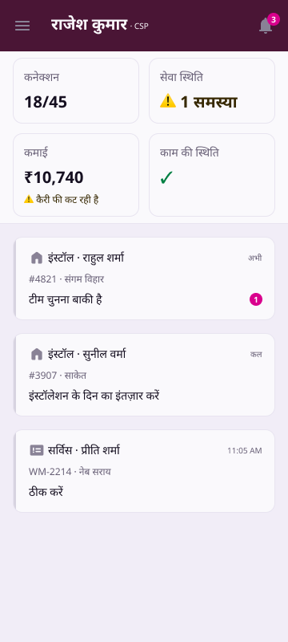
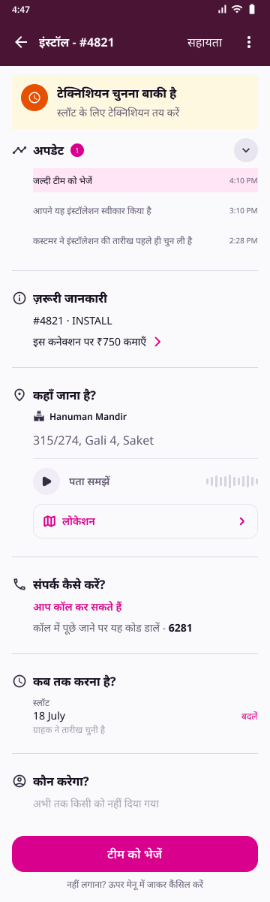
Case 3 · The timer runs out while a booking screen is open
The deadline passes while the CSP is on the address or date screen. The booking is no longer theirs.
- The chip reaches 0:00:00 and turns red, and the "समय खत्म" sheet opens on top of whichever screen is open.
- ठीक है → home. The card is now a greyed, closed card, "कनेक्शन वापस ले लिया गया", and later moves to पुराने काम (archive), as today.
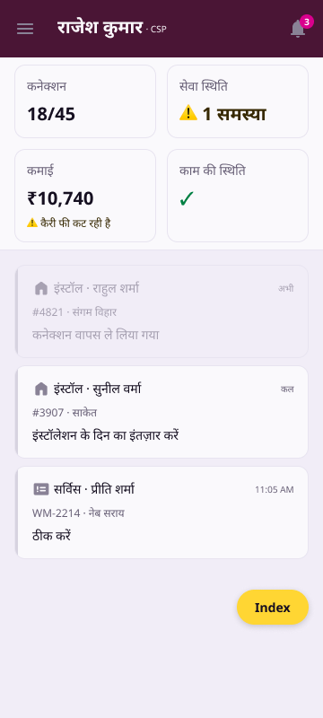
Case 4 · ✕ on the address screen
The CSP closes after seeing only the address. Nothing is accepted, and the timer keeps running.
- ✕ → sheet "कनेक्शन अभी स्वीकार नहीं हुआ है". Its secondary button is "इंस्टॉलेशन का दिन देखें" → date screen.
- बाद में देखूँगा → back where the CSP came from (home). The card shows the timer line, as in case 1. Card tap → address screen.
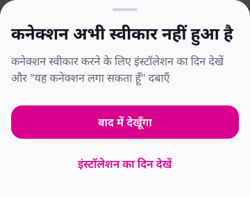
Case 5A · Can't install at this address (from the address screen)
The CSP taps "पता समझ नहीं आया / नहीं लगा सकते?". We first help them understand the address, and only then take a no.
- Sheet "पता समझ नहीं आ रहा?" has two help rows and a red text button: कस्टमर को कॉल करके पता समझें → call sheet (IVR code, as live) · इस जगह पर आपके पहले से लगे 4 कनेक्शन देखें → nearby map + list · इस पते पर नहीं लगा सकता → reasons.
- The reason sheet shows two reasons that fit the address: इस जगह तार नहीं जा पाता and नेट-बॉक्स नहीं है, plus और वजहें. Submit is disabled until one is picked.
- और वजहें adds कस्टमर ने मना कर दिया and कस्टमर से बात नहीं हो पाई only if the CSP has called the customer at least once on this booking, plus कोई और वजह (free text, always last and only in the full list). Without a call, the full list is the two address reasons plus कोई और वजह.
- Submit → "बुकिंग हटा दी गई है" with the chosen reason. For the cable reason it adds "अब इस जगह के आस पास बुकिंग आपको नहीं भेजी जाएगी". ठीक है → home, where the card reads "कनेक्शन आपने हटा दिया".
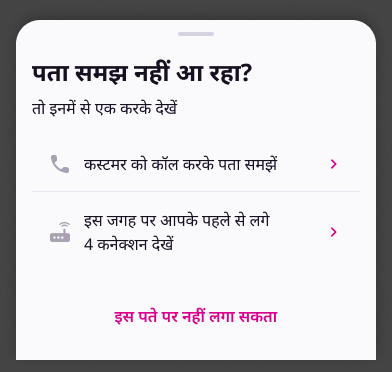
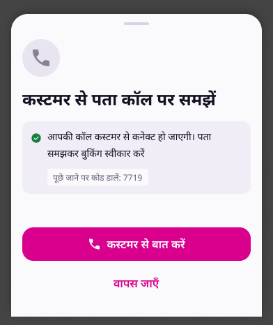
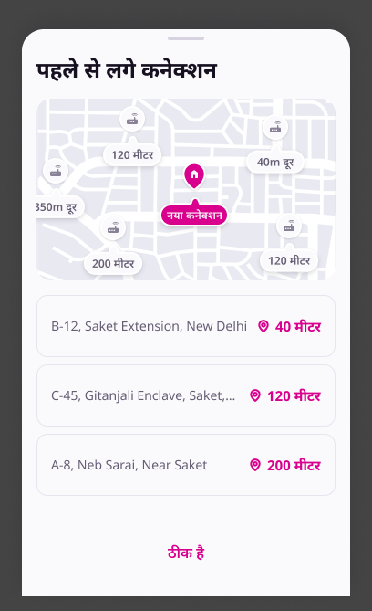
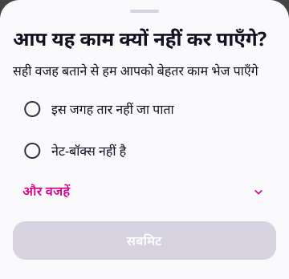
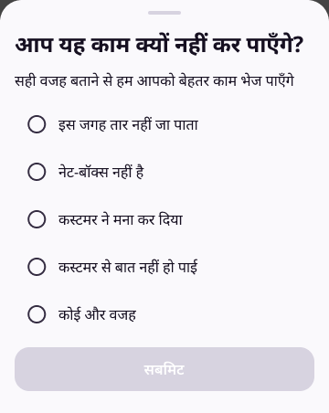
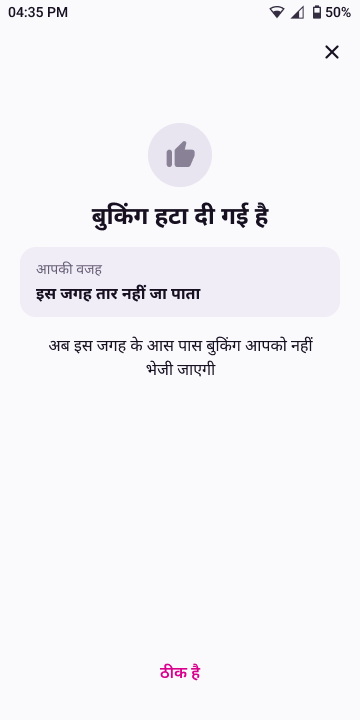
Case 5B · Can't install on this day (from the date screen)
The CSP taps "इस दिन कनेक्शन नहीं लगा सकता". We offer a date change before taking a no.
- Sheet "दिन बदल सकते हैं": दिन बदलें → the date-change flow · कनेक्शन नहीं लगाना → reasons.
- Changing the date before accepting works the same as the live date change (reason → date picker → "दिन बदल दिया गया है"). The CSP lands back on 2/2 with the new date and the timer still running, and still has to tap "यह कनेक्शन लगा सकता हूँ" to accept. The customer gets the existing date-change message. The same applies to "दिन बदलें" on the date screen itself.
- If the CSP has called the customer at least once on this booking: the two customer reasons are on top (कस्टमर ने मना कर दिया, कस्टमर से बात नहीं हो पाई), and the rest are collapsed under और वजहें: the cable reason, नेट-बॉक्स, then कोई और वजह last.
- If the CSP has not called: the customer reasons are not shown at all. The top two are the remaining ones (इस जगह तार नहीं जा पाता, नेट-बॉक्स नहीं है), and और वजहें holds only कोई और वजह.
- A "call" is any tap that starts a call to the customer on this booking: the call button on the date screen, or "कस्टमर को कॉल करके पता समझें" in the address help sheet.
- Submit → "बुकिंग हटा दी गई है" → home, as in 5A.
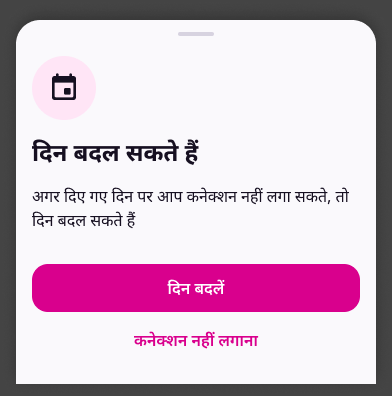
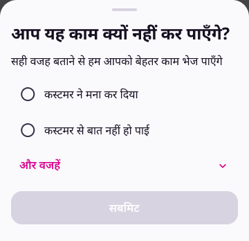
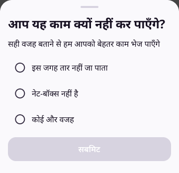
Case 6 · Address not understood
The CSP opens "पता समझ नहीं आया / नहीं लगा सकते?" only to understand the address, not to say no.
- The help sheet (as in 5A) → कस्टमर को कॉल करके पता समझें → the call sheet with the IVR code. This counts as a call for the reason rules.
- Or → इस जगह पर आपके पहले से लगे {n} कनेक्शन देखें → the nearby map + list. ठीक है → back to 1/2, with the timer still running.
Case 7 · Last 30 minutes
The booking is still unaccepted and 30 minutes or less are left. It behaves the same as the happy path, but the time is red everywhere, including the bubble ring (see Timer rules).
Case 8 · "मैं खुद करूँगा" (CSP installs it themselves)
On the team list the CSP picks themselves instead of a team member.
- Select मैं खुद करूँगा → टीम को भेजें becomes active.
- Success: "यह कनेक्शन आप खुद लगाएँगे" · "18 जुलाई तक कनेक्शन लगाएँ", held for 1.2 s, then it slides up into the drilldown (motion C).
- Drilldown: the same title, and कौन करेगा? shows आप खुद. ← → home.
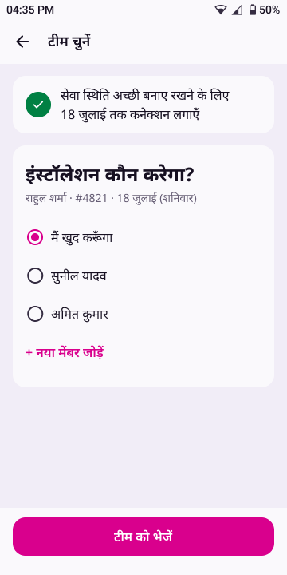
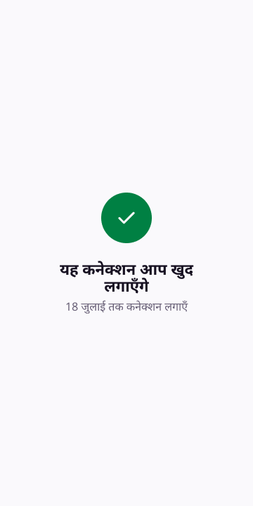
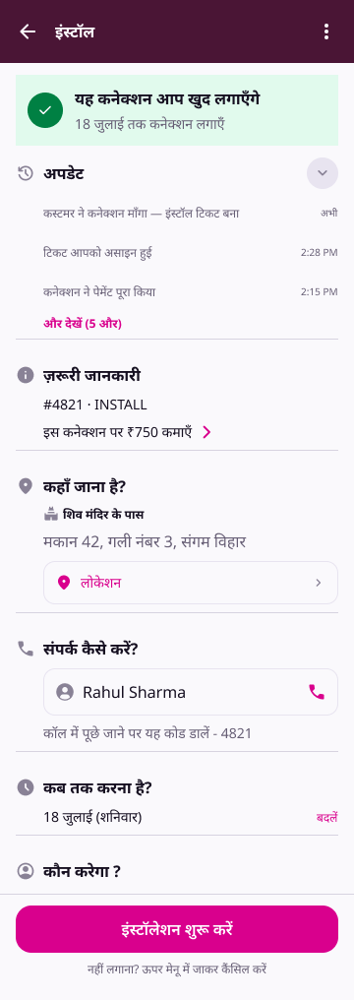
08 · Home card
The card's second line, by state
| State | Second line | Colour | Mark | Card tap opens |
|---|---|---|---|---|
| Not accepted, more than 30 min left | 3:42:10 · कनेक्शन स्वीकार करना बाकी है | All text/default | Count | The screen the CSP left: address, or date if they reached it |
| Not accepted, 30 min or less | 0:24:15 · कनेक्शन स्वीकार करना बाकी है | Time text/critical (red), "·" text/secondary, rest text/default | Count | Same |
| Accepted, no team | टीम चुनना बाकी है | text/default | Count | Drilldown · टेक्निशियन चुनना बाकी है |
| Team assigned | इंस्टॉलेशन के दिन का इंतज़ार करें | text/default | None | Drilldown · {name} तय हो गए हैं |
| CSP said no | कनेक्शन आपने हटा दिया | Greyed card, text/disabled | None | Drilldown (closed) |
| Timed out | कनेक्शन वापस ले लिया गया. The card stays as a closed card and later moves to पुराने काम (archive), as today | Greyed card, text/disabled | None | Drilldown (closed), as today |
09 · Copy
New and changed strings
| Where | Live today | New |
|---|---|---|
| Timer chip (1/2, 2/2) | — | {h:mm:ss} में स्वीकार करें |
| Home card, not accepted | Countdown only | {h:mm:ss} · कनेक्शन स्वीकार करना बाकी है |
| Address CTA | यह कनेक्शन लगा सकता हूँ · नहीं लगा सकता | इंस्टालेशन का दिन देखें |
| Address link | पता नहीं समझे ? | पता समझ नहीं आया / नहीं लगा सकते? |
| Address help sheet | कस्टमर से पता कॉल पर समझें | पता समझ नहीं आ रहा? · तो इनमें से एक करके देखें · कस्टमर को कॉल करके पता समझें · इस जगह पर आपके पहले से लगे {n} कनेक्शन देखें · इस पते पर नहीं लगा सकता |
| Date primary CTA | टीम को भेजें | यह कनेक्शन लगा सकता हूँ |
| Date secondary CTA | नहीं कर पाएँगे | इस दिन कनेक्शन नहीं लगा सकता |
| Date change sheet | — | दिन बदल सकते हैं · अगर दिए गए दिन पर आप कनेक्शन नहीं लगा सकते, तो दिन बदल सकते हैं · दिन बदलें · कनेक्शन नहीं लगाना |
| ✕ sheet (1/2) | यह कनेक्शन अभी नहीं देखना? · कनेक्शन 4 घंटे तक आपके पास रहेगा… | कनेक्शन अभी स्वीकार नहीं हुआ है · कनेक्शन स्वीकार करने के लिए इंस्टॉलेशन का दिन देखें और "यह कनेक्शन लगा सकता हूँ" दबाएँ। · बाद में देखूँगा · इंस्टॉलेशन का दिन देखें |
| ✕ sheet (2/2) | (same as above) | कनेक्शन अभी स्वीकार नहीं हुआ है · कनेक्शन स्वीकार करने के लिए "यह कनेक्शन लगा सकता हूँ" दबाएँ। · बाद में देखूँगा · यह कनेक्शन लगा सकता हूँ |
| Timer info sheet | — | {h:mm:ss} में कनेक्शन स्वीकार करें · समय समाप्त होने पर यह कनेक्शन आपसे हटा दिया जाएगा। · ठीक है |
| Time-up sheet | — | समय खत्म · यह बुकिंग अब आपके पास नहीं है · ठीक है |
| Accepted screen → team list banner | — | सेवा स्थिति अच्छी बनाए रखने के लिए / {date} तक कनेक्शन लगाएँ |
| Team list CTA | टीम को भेजें | टीम को भेजें |
| Assigned success + drilldown title | {name} को भेज दिया गया है · डिटेल देखें | {name} तय हो गए हैं · {date} तक कनेक्शन लगाएँ |
| Self-assign success + drilldown title | — | यह कनेक्शन आप खुद लगाएँगे · {date} तक कनेक्शन लगाएँ · कौन करेगा? आप खुद |
| Drilldown ज़रूरी जानकारी (every install drilldown until archived) | — | इस कनेक्शन पर ₹{amount} कमाएँ › (eligible, not opted in; › opens the scheme page) · इस कनेक्शन पर ₹{amount} मिलेंगे (opted in, no arrow) · hidden (not eligible) |
| Home card, timed out | — | कनेक्शन वापस ले लिया गया |
| Reason sheet | (reason set V2) | आप यह काम क्यों नहीं कर पाएँगे? · सही वजह बताने से हम आपको बेहतर काम भेज पाएँगे। · सबमिट |
| Removed screen | — | बुकिंग हटा दी गई है · आपकी वजह · {reason} · ठीक है |
10 · Measure
How we'll know it worked
- Timed out before accept: share of bookings that reach the deadline without a decision (baseline 31.5%).
- Accepted, no technician within 24 h: baseline 11.8% of bookings.
- Time from booking to accept and from accept to assign, as medians.
- Booking → install within 14 days: the outcome all of the above should move.
- Guardrail: the explicit no-rate. A clear no is a good outcome, but a jump would mean the new flow pushes CSPs out.